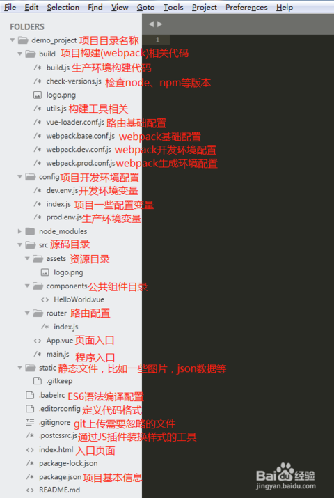

一、本尊建议的学习顺序：https://zhuanlan.zhihu.com/p/23134551（侵删）
二、安装：
1、安装 Node.js，可以去Node.js的官网上下载；
2、（非必选）如果想日后方便使用，安装依赖包快一点，切一下淘宝 npm 的镜像，不会的百度：切换淘宝npm镜像 ，就会出来一大堆，自己看！
3、安装webpack，运行：npm install webpack -g，这里有全局安装和局部安装（区别在后面的 -g 参数），建议选全局的；
4、然后通过 vue-cli 的脚手架一步一步的搭建一个vue的项目，直到能跑起来为止。
详情：https://blog.csdn.net/six_six_six_666/article/details/82633731 （侵删）
5、文件夹目录：

三、部分知识整理：
1、vue单文件：
以*.vue结尾的文件，最终通过webpack也会编译成*.js在浏览器运行（webpack找人来理解你的单文件代码）
<style>
/* pageFullScreen在index.css */
#xxxFullScreen {
background-color: #eee;
}
</style>
<template>
<div class="pageFullScreen" id="xxxFullScreen">
</div>
</template>
<script>
export default {
data() {
return {
}
},
activated() {
}
}
</script>①、template中只能有一个根节点（div);
②、script中按照export default{配置}来写；
③、style中可以设置scoped属性，让其只在template中生效。
2、src ：存放人可以看懂的源代码，具备一定的功能划分；
dist：存放真实上线的代码（减少请求，混淆代码），机器能看懂的；
webpack.config.js 打包生成dist下的代码
3、vue与angular比较：
前者 是组块化（细分代码）、双向数据流（基于ES5中的defineProperty来实现的，IE9才支持；js内存属性发生改变，影响页面变化，反之也改变。）
后者是模块化、双向数据绑定。
4、部分指令：
v-text:元素的innerText只能在双标签中使用；
v-html:元素的innerHTML,不能包含{{xxx}};
v-if:元素是否移除或者插入；
v-show:元素是否显示或者隐藏；
v-model:双向数据绑定（页面<---->内存）；<常在input、select、radio、textarea、checkbox等表单控件元素上>
v-bind:单向数据绑定（内存js改变影响页面，简写：可以省略）；
v-for：可以使用操作数组（item,index），操作对象（value,key,index)
<key是类似trank by的一个属性，为的是告诉vue.js中的元素，与页面之间的关联，当试图删除元素的时候，是个单个元素的删除，而不是正版替换，所以需要关联其关系，设置>
5、父子组件： （prop单向绑定：父----->子）
父组件需要声明子组件，引入子组件对象；
①、父组件通过子组件的属性将值进行传递，方式有：
常量：prop1=“属性值”
变量：prop2=“变量名”
②、子组件需要声明：
根属性 props:['prop1','prop2']
在页面中直接使用{{prop1}} 在js中使用prop1?用this.prop1获取。
动态props:类似于用v-bind 绑定html特性到一个表达式，也可以用v-bind动态绑定props的值到父组件的数据中。
每当父组件的数据变化时，该变化也会传导给子组件。
6、过滤器：（Js函数，可以接受参数，可以串联；过滤器函数接受表达式的值作为第一个函数）
content 过滤器，vue中没有提供相关的内置过滤器，可以自定义过滤器；
组件内的过滤器+全局过滤器：
组件内关联过滤器就是options中的一个filters的属性（一个对象）
多个key就是不同过滤器名，多个value就是与key对应的过滤器方式函数体 vue.filter(名，fn)
比较：
全局：范围大，如果出现同名时，权利小；
组件内：范围小，如果出现同名时，权力大。
7、获取DOM元素：
前端框架就是为了减少DOM操作，但是特定情况下，也会给你留下后门；
在指定的元素上，添加 ref="名称A"
在获取的地方加入 this.$refs.名称A
如果ref放在原生DOM元素上，获取的数据就是原生DOM对象；可以直接操作；
如果ref放在了组件对象上，获取的就是组件对象；获取到DOM对象，通过this.$refs.sub.$el，进行操作。
四、核心插件----路由 vue-router
这里的路由并不是指我们平时所说的硬件路由器，这里的路由就是SPA（单页应用）的路径管理器。再通俗的说，vue-router就是WebApp的链接路径管理系统。
vue-router是Vue.js官方的路由插件，它和vue.js是深度集成的，适合用于构建单页面应用。vue的单页面应用是基于路由和组件的，路由用于设定访问路径，并将路径和组件映射起来。传统的页面应用，是用一些超链接来实现页面切换和跳转的。在vue-router单页面应用中，则是路径之间的切换，也就是组件的切换。路由模块的本质 就是建立起url和页面之间的映射关系。
至于我们为啥不能用a标签，这是因为用Vue做的都是单页应用（当你的项目准备打包时，运行npm run build时，就会生成dist文件夹，这里面只有静态资源和一个index.html页面），所以你写的<a></a>标签是不起作用的，你必须使用vue-router来进行管理。
包含的功能有：
1、使用方式：
①、下载‘npm i vue-router-S’
②、在main.js中引入
import VueRouter from 'vue-router'③、安装插件'vue.use（插件）‘
Vue.use(VueRouter)④、创建路由对象并配置路由规则；
let router = new VueRouter({routes:[{path:'/home',component:Home}]});⑤、将其路由对象传递给vue的实例，options中
router:router⑥、留坑
<router-view></router-view> 2、命名路由：
通过a标签点击，做页面数据跳转： 使用router-link标签（一个组件，用于设置一个导航链接；切换不同html内容）
①、去哪里：
<router-link to="/beijing"> 去北京</router-link>②、去哪里
<router-link ：to="{name:'bj'}"> 去北京</router-link>更利于维护，如果修改了path，只修改路由配置中的path，该a标签会根据修改后的值生成href属性
3、参数router-link：
在vue-router中，有两大对象被挂载到了实例this：
$route(只读，具备信息的对象）、$router（具备功能函数的对象）
查询字符串：
1、去哪里：
<router-link ：to="{name:'detail',query:{id:1}}"> xxx</router-link>2、导航（查询字符串path不能改）
{name:'detail',query:'/detail',组件}3、去了干嘛：获取路由参数（要注意是query还是params和对应id名）
this.$route.query.idpath方式：
1、去哪里：
<router-link ：to="{name:'detail',params:{name:1}}"> xxx</router-link>2、导航（path方式需要在路由规则上加上/:xxx)
{name:'detail',path:'/detail/:name',组件}3、去了干嘛，获取路由参数（要注意是query还是params和对应name名）
this.$route.params.name